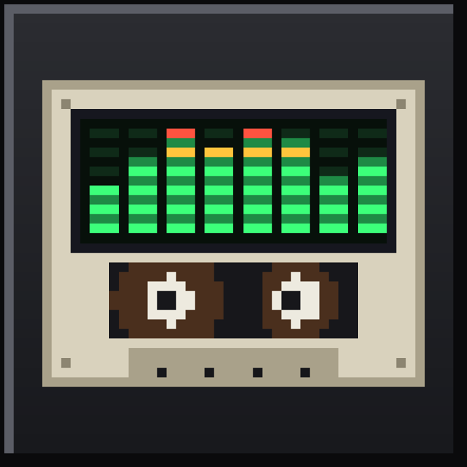
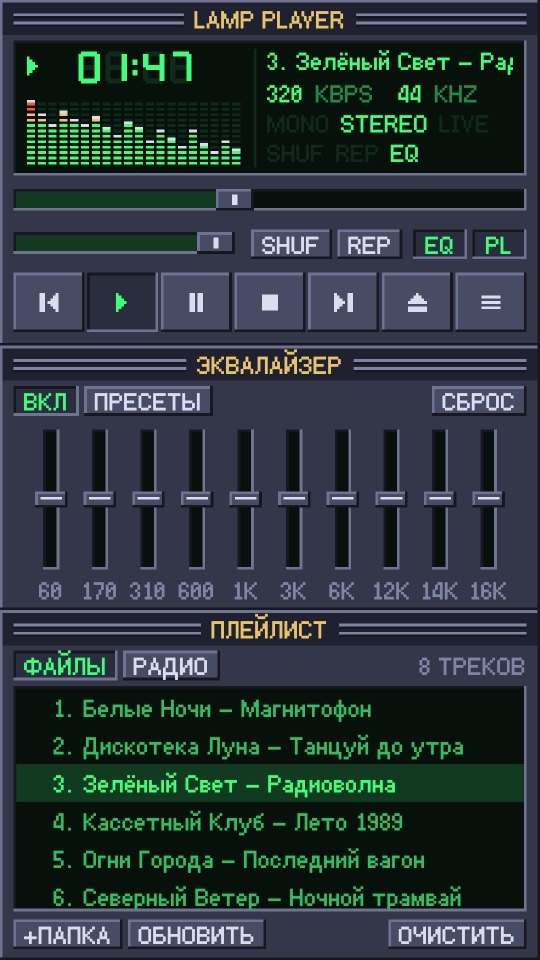
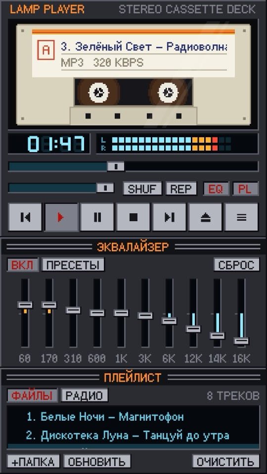
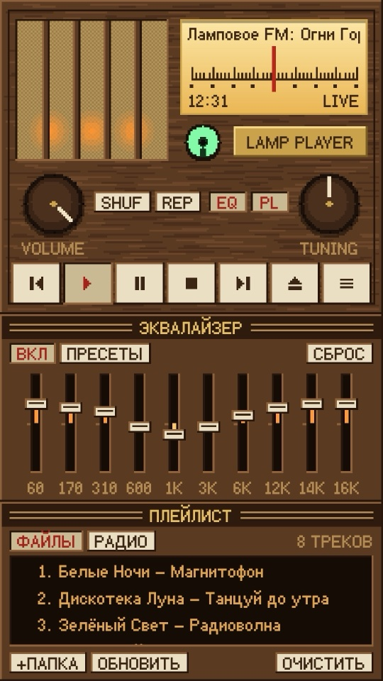

LAMP PLAYER
Ретро-плеер для своей музыки и интернет-радио. Три скина, светящийся спектр, эквалайзер с крупными ползунками и клавиши, которые щёлкают.
Скоро в Google Play


ТРИ СКИНА
- Классика: окно настольного плеера с ЖК-часами и анализатором спектра
- Кассетная дека: катушки вращаются, лента перематывается с одной на другую
- Ламповый приёмник: деревянный корпус, светящиеся лампы, шкала и «магический глаз»
МУЗЫКА И РАДИО
- MP3, FLAC, M4A/AAC, Ogg, Opus, WAV и другие форматы из выбранных папок
- Без пауз между треками, перемешивание, повтор, управление с экрана блокировки и наушников
- Старые русские теги в Windows-1251 показываются правильно
- 31 встроенная станция на пяти языках или любой адрес потока
- Эквалайзер на 10 полос с пресетами и клавиша «Стоп», которая останавливает музыку, как кассету
НИЧЕГО ЛИШНЕГО
Без аккаунта, рекламы и слежки. Ваша музыка не покидает телефон. Политика конфиденциальности.